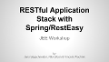

This website will guide you through the completion of the workshop. After completing a task, mark it as done by clicking on the box next to the title.
Questions regarding the workshop can be asked at the time of the workshop or by emailing Vincent, Jens or Nils.
This workshop teaches the workflow of using Spring and RestEasy to create a RESTful server-side application. The example application (Task Manager) is pre-configured and fully functional. All you have to do is follow the instructions below.
You can use the provided client application to test the REST API, but of course you can also use a tool like Postman.
You can access the workshop presentation online. Just click on the thumbnail to download or open the PDF in your browser.
You have the choice to either use the provided virtual machine with all the requirements installed or to install them manually on your platform of choice.
The virtual machine will be provided during the workshop. Just import it using the virtualization environment of your choise.
In order to take part in our workshop, make sure to have the following requirements set up before starting the workshop.
Oracle JDK 8 Java Development Kit
A recent version of Java is required for the project to run without problems.
NetBeans 8 Integrated Development Environment
NetBeans is the preferred IDE to use for this workshop, but you can of course use a different one.
Maven is used to simplify the build process tremendously.
Wildfly 8.1.0 Final Application Server
Wildfly is the application server for which the example application used in this workshop has been developed. It is highly recommended to stick to this server. After the installation, you have to configure NetBeans to use Wildfly.
Check out our GitHub repository
The repository contains the example application for this workshop.
Set up the repository for the task by executing this command:
$ git checkout -f step-0
Implement the single entity GET action in the Category REST resource class and service.
First, implement the CategoryService::get(id) method. This method queries the CategoryRepository for a Category object with a specific ID and then returns a CategoryRepresentation derived from the Category object.
If you are unsure how to implement this method, look into AccountService::get(id). This method is already implemented.
Next, implement CategoryResource::find(id) which delegates to CategoryService::get(id).
Action methods in REST resource classes delegate to corresponding methods in service classes for better code readability and separation of concerns. The only purpose of the REST resource classes is to expose the corresponding services through a REST-interface. The services contain the business logic.
Set up the repository for the task by executing this command:
$ git checkout -f step-1
Implement the representation mapper methods for CategoryService.
Implement the CategoryService::model() and CategoryService::representation() methods which map the Category domain object to the representation object and vice-versa.
Domain objects (Account, Category and Task) are stored in the database and are thus JPA-annotated. However, they are not served through the REST resources as the actual entities. This is because the domain objects have cross-relationships which are not supposed to be exposed through the REST interface.
Therefore, domain objects are mapped to representation objects which hold all necessary information but lack relationships. Instead, relationships are represented by an ID-reference. The user of the REST interface can then request those referenced entities if desired.
Set up the repository for the task by executing this command:
$ git checkout -f step-2
Implement the JSON serialization getter in the ResourceExceptionMapper::ExceptionEntity class.
The ExceptionEntity class is serialized into JSON. Therefore, it needs getters for every property which is later serialized. Create and implement a ExceptionEntity::getMessage() method.
Every time an exception occurs server-side, the exception interceptor converts the exception to JSON which is then served to the user of the REST interface. This is necessary, because otherwise the user of the REST interface would be presented with the default exception output page of the application server which is not JSON and thus cannot be parsed as easily.
Set up the repository for the task by executing this command:
$ git checkout -f step-3
Implement the entity list GET method in the Task REST resource class and service.
First, implement the TaskService::getAll(accountId) method. This method first retrieves the corresponding Account object from the AccountRepository. If the Account does not exist, an InvalidQueryException should be thrown. Then, a list of Task objects is retrieved from the TaskRepository which is then mapped to a list of representation objects and returned.
If you are unsure how to implement this method, look into CategoryService::getAll(accountId). This method is already implemented.
Next, implement TaskResource::findAll(accountId) which delegates to TaskService::getAll(accountId).
Set up the repository for the task by executing this command:
$ git checkout -f step-4
Implement the entity UPDATE method in the Task REST resource class and service.
First, implement the TaskService::update(id, repr) method. This method converts the representation object into a domain object, saves the object in the repository, and then returns the representation object.
If you are unsure how to implement this method, look into CategoryService::update(id, repr). This method is already implemented.
Next, implement TaskResource::update(id, task) which delegates to TaskService::update(id, repr).
Set up the repository for the task by executing this command:
$ git checkout -f step-5
Implement the entity DELETE methods in the Category and Task REST resource class and service.
First, implement the CategoryService::delete(id) and TaskService::delete(id) methods which simply instruct the repository to delete the object with the referenced ID.
Next, implement CategoryResource::delete(id) and TaskResource::delete(id) which delegate to CategoryService::delete(id) and TaskService::delete(id), respectively.
Set up the repository for the task by executing this command:
$ git checkout -f step-6
Deploy the application and test it using the provided client application.
Build and deploy the example application on the Wildfly Application Server. When done successfully, the application should be accessible through port 8080 on the local machine.
Then, open the client application in your browser. Add and select an account. You can now start to create categories and tasks.
If you have completed all provided tasks and you still have time, here are a few additional tasks you can do:
Change the underlaying database system to use PostgreSQL or MySQL. You first have to install the RDBMS on your system, of course.
Implement an authorization interceptor which checks for an Authorization HTTP header with valid Account credentials.
Implement Session service, representation and REST resource classes. Optionally, you can also change the authorization interceptor to accept sessions as well.
Copyright © Vincent Wochnik 2014. All rights reserved.